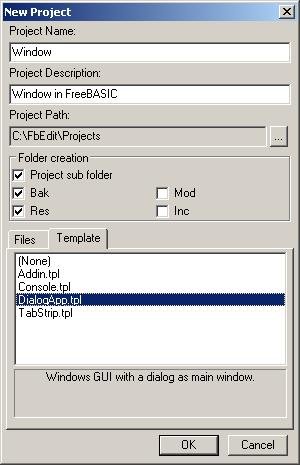
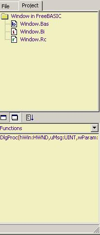

When you start your FbEdit IDE the first time you might
find some colors very weird compared to your VB IDE.
The first thing i did
(as a VB programmer ) was to change the color scheme.

From the FbEdit IDE menu click Options then
click Code Editor. You will see this Dialog:

The Options menu where you changed some
colors you can also change editor font, help menus and almost
everything you need.
You can also change the gridsize in your dialog editor, so it looks as the
VB
Dialog editor. See Options / Dialog Editor.
None of these
changes are needed, we can start right away with our 1st application written
in
FreeBasic and you should be finished in 30
seconds:
FIRST STEP
First click
File and then New Project or just hit
SHIFT+Ctrl+N.

You will see this dialog:

All you have to do is enter a program title (first textbox), then
add a description for your application (second textbox).
The path where
FbEdit will save the wizard created files and folders (third textbox).
You should also check the Folder Creation / Res to have a res folder created for you.
As our template our choice will be DialogApp.tpl (template tab)
Click OK
FbEdit creates some (actually alot) of files for you and
even two folders (the \res and the \bak folder)
You can see the main files
in your project window.
Under the project window you have the
property window.
Your FbEdit project window should look like
this:

Now it s time to take a look at your FbEdit toolbar. You
should find a
button called "Go" (tooltip)

Click it to build your project.
If you did everything
correct, you should see your first window popping up.
In FreeBASIC,
without writing one line of code. Thats really RAD (rapid application
developement).

Now we have one empty ugly window.
Without going to look at
FreeBASIC code or windows API itself you
can already do lots of modifications
to this window thanks to the great FbEdit editor.
Go ahead and open the
dialog editor. It s just like in VB.
Except for some lill differences, but
you will find them out soon, they dont matter anyway.
To open it simple
double click the Window.rc in your project window.
You can place buttons, textboxes, shapes on your form and as
soon
you hit Go! your changed window will appear with your controls on
it.
Of course they dont have any functions yet, and they are not even
initilized (like in VB)
We do this in our second tutorial.
Note: If you
place some CommonControls (example Richedit or DateTimePicker)
to your
dialog, your program might wont appear anymore when you
Hit Go! Even if FbEdit
doesnt give you any errors while compiling.
We will deal with this later
(Tutorial #5), dont worry, everything is ok.
You can change the dialogs
caption and style, try to make it topmost -
You do all this in the property
dialog of your window. Experiment a lill with the changes you
can do. It s
quite alot.
SECOND STEP
Our first task will be putting a pretty icon to our
window.
Look for an icon and copy it to your project \res folder. (Remember:
FbEdit can create a \res folder for you.)
FbEdit is doing lots of work again for
us so just sit back and relax.
First select Window.rc file on file tab
then click Resource and then
Resources from the FbEdit menu.
You see a dialog like this
appear:

Click Add buttton to add a new resource (our icon)
to our
Project. We call this Icon IDC_ICON and give it the ID 500.
Now
click the path button and look for the icon you copied into
Your \res folder.
Choose this icon and click Open.
You should have a result like
this. You can click OK to exit the resource dialog.

Now we have to insert some code.
But dont worry it s
not much. In your project browser you see the files
Windows.bas and
Windows.bi
We need to add two lines to the first one and 1 single line to
the second.
First the Windows.bi file. Double click it to open it.
You
should see something like this

- We have to add a variable for our
icon,
- we call this variable hIcon
-
-
-
- so go ahead and type:
Dim Shared hIcon As HICON
Now your Windows.bi looks like this:

Now double-click your Windows.bas file

Now we add 2 lines to our code, to get the icon actually showing
on our window.
- Just like in Visual Basics FORM LOAD in Windows API we use
WM_INITDIALOG
- Here is where we have to write our lines:
[code]
hIcon=
LoadIcon(hInstance,Cast(ZString Ptr,500)) ' our first Win API loading
icon to our created window
SendMessage(hWin,WM_SETICON,NULL,Cast(LPARAM,hIcon))
' our second WIN API sets the loaded icon to our
dialog
[/code]
Looks like this:

Hit Go once more to see the result (FbEdit autosaves your
project as soon you build)
If you did any typos (hope not ) FbEdit will give
you errormessages in the output window at the bottom:
Simply click bookmark to
jump to the line. FbEdit highlights the line where it finds an error.
If you ve done all correct,
take a look at your first created FreeBASIC standalone .exe file.
It s just
11kb big. (without icon propably just 7kb) This is really impossible to do in
VB.
You can download the example from here.